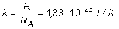
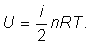

Provocarea 3-1
Provocarea 3-1
De ce oare este înscris pe tuburile de spray avertismentul de a nu fi aruncate în foc?
Elemente de termodinamică. |
Transformări simple ale gazului ideal |
E-3. |
Ecuaţia de stare a gazului ideal |
Provocarea 3-1
De ce oare este înscris pe tuburile de spray avertismentul de a nu fi aruncate în foc?
Când sunt încălzite peste măsură, tuburile de spray pot exploda! Mărind temperatura gazului închis în tub, presiunea acestuia poate creşte atât de mult încât să distrugă tubul (şi ceea ce este în jurul său!).
Conform expresiei presiunii gazului ideal,
| (1) |
presiunea gazului din tub nu poate creşte decât pe seama creşterii energiei cinetice medii a fiecărui grad de libertate, (numărul particulelor, N, precum şi volumul tubului, V, modificându−se nesemnificativ).
Aceasta înseamnă că există o relatie directă între temperatura gazului şi energia cinetică medie a particulelor sale! Dacă s−ar fi ştiut aceasta de la bun început, am fi măsurat temperatura în unităţi de energie (joule). Dar scările de temperatură erau deja definite (în kelvini) când a fost descoperită această relaţie între energie şi temperatură. Astfel, relaţia dintre energia cinetică medie pentru fiecare grad de libertate şi temperatura gazului ideal este:
| (2) |
unde k este constanta lui Boltzmann, iar T este temperatura absolută a gazului ideal.
Utilizând această relaţie, expresia presiunii gazului ideal devine:
sau, echivalent,

Numărul de particule N poate fi scris în funcţie de numărul de moli n şi de numărul particulelor dintr−un mol (constanta lui Avogadro, NA), astfel că:
Produsul NAk fiind un produs de constante, este la rândul său o constantă, numită constanta universală a gazelor:
Cu acestea, relaţia dintre parametrii gazului ideal devine:
 Ecuaţia de stare a gazului ideal: .
Provocarea 3-2
Ecuaţia de stare a gazului ideal: .
Provocarea 3-2
În condiţii normale de temperatură şi presiune (p0=1,013·105 Pa şi T0 =273,1 K), un mol al oricărui gaz ocupă volumul 22,41 m3 (volumul molar normal).
Cât este constanta universală a gazelor? Dar constanta lui Boltzmann?
Din ecuaţia de stare a gazului ideal, obţii:
iar pentru constanta lui Boltzmann:

Ecuaţia de stare a gazuli ideal îţi permite să determini oricare dintre parametrii care apar în ecuaţie, dacă îi cunoşti pe ceilalţi.
Provocarea 3-3
Exprimă energia internă a gazului ideal în funcţie de temperatura absolută a acestuia.
Energia internă a gazului ideal a cărui particule au i grade de libertate este:
Folosind ecuaţia de stare a gazului ideal, obţii imediat ecuaţia calorică de stare:

Pentru o cantitate dată de gaz ideal, energia internă a acestuia
depinde doar de temperatura absolută a gazului.